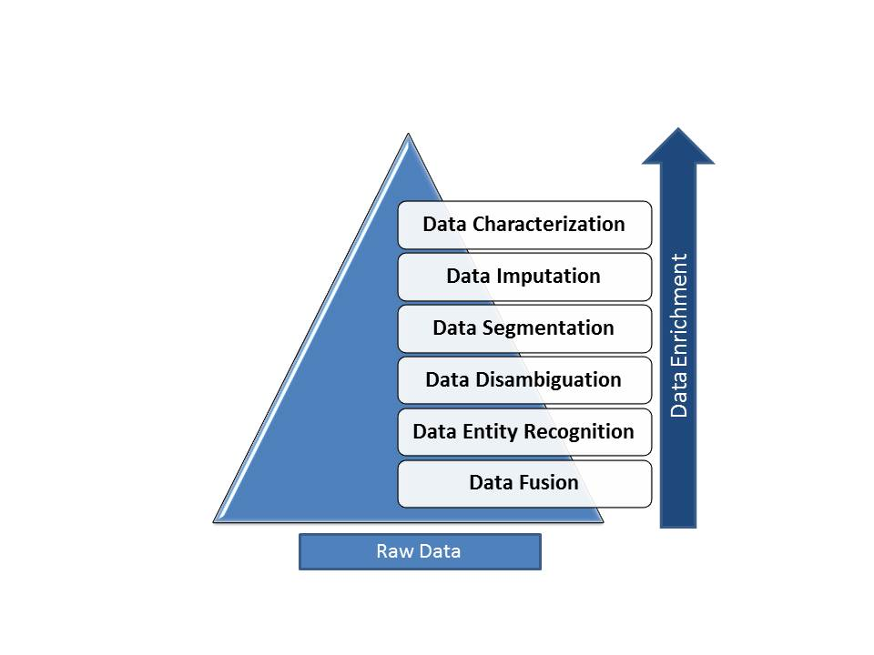

Data enrichment refers to processes used to enhance, refine or otherwise improve raw data. This idea and other similar concepts contribute to making data a valuable asset for almost any modern business or enterprise. It also shows the common imperative of proactively using this data in various ways.
There are several motivations to deal with this data enrichment process, which can be summarized by main characteristics of the huge amount of data originated by Web 2.0 applications. Thus, we are talking about big data and different user and business demands to deal with it! In this context, we are dealing with different data characteristics, such as volume, diversity or variety, velocity, variability, and complexity.
Big data can be described by the following characteristics:
In order to deal with different data originated by Web applications, especially from user-generated content (UGC) and Web 2.0, there are different computational tasks that we have to perform. These tasks, which also specify challenges to be addressed, determine the data enrichment process. We now describe the challenges related to data enrichment, follow by recommendations to be followed when executing the process.
In this section we present the main data enrichment challenges and tasks, describing each one. These tasks are inherited from a data-centric view, as illustrated by Figure 1.
Figure 1: Data enrichment challenges - will be redraw in a better format
The data enrichment process, as shown by Figure 2, consists of applying one or more tasks in an independent way, where the data D are transformed in data D´ as a result of one data enrichment task. This can be a cyclic process, providing more data structure as the tasks are performed.

Figure 2: Data enrichment process - will be redraw in a better format
One of the first tasks to be considered when dealing with data enrichment is data categorization. Data categorization refers to the task of manually or automatically labeling data according to different types of categories, including (i) the topics present in a document, e.g. football or politics, (ii) the sentiment or opinion engraved in a sentence, e.g. positive or negative, or (iii) any other type of category, including if the text regards an event occurring in real time or not.
Here we focus on three different types of characterization: manual labeling, topic extraction and sentiment analysis.
Typically, unlabeled data consists of samples of natural or human-created artifacts that you can obtain relatively easily from the world. Some examples of unlabeled data might include photos, audio recordings, videos, news articles, tweets, x-rays (if you were working on a medical application), etc. There is no "explanation" for each piece of unlabeled data -- it just contains the data, and nothing else.
Labeled data typically takes a set of unlabeled data and augments each piece of that unlabeled data with some sort of meaningful "tag," "label," or "class" that is somehow informative or desirable to know. For example, labels for the above types of unlabeled data might be whether this photo contains a horse or a cow, which words were uttered in this audio recording, what type of action is being performed in this video, what the topic of this news article is, what the overall sentiment of this tweet is, whether the dot in this x-ray is a tumor, etc.
Labels for data are often obtained by asking humans to make judgments about a given piece of unlabeled data (e.g., "Does this photo contain a horse or a cow?") and are significantly more expensive to obtain than the raw unlabeled data.
After obtaining a labeled dataset, machine learning models can be applied to the data so that new unlabeled data can be presented to the model and a likely label can be guessed or predicted for that piece of unlabeled data.
There are many active areas of research in machine learning that aim at integrating unlabeled and labeled data to build better and more accurate models of the world. Semi-supervised learning attempts to combine unlabeled and labeled data (or, more generally, sets of unlabeled data where only some data points have labels) into integrated models. Deep neural networks and feature learning are areas of research that attempt to build models of the unlabeled data alone, and then apply information from the labels to the interesting parts of the models.
The previous task dealt with data manually labeled. This section introduces a second task, known as topic discovering, extraction or identification, where a set of information (which can be documents, images, social networks messages, among others) is grouped according to their content [D-TOPIC1, D-TOPIC2, D-TOPIC3].
Topic discovering methods are among the most explored to extract information from large amounts of data. They were conceived to find semantically meaningful topics from a document corpus and are usually based on one of the following approaches: (i) clustering, which includes traditional data mining algorithms applied to textual data; (ii) probabilistic, such as Latent Dirichlet Allocation (LDA), where a generative model allows explaining sets of observations by the similarity inherent to some parts of the data [D-TOPIC2] and (iii) non-probabilistic, which generate good-quality topics, regardless of vocabularies overlap.
In the process of data enrichment, methods such as LDA can be used to extract semantic topics from text. These topics are represented by a set of words that, together, expresses the topic contained in a document. With the help of a specialist, semantics can be extracted from these sets of words for a qualitative evaluation. Otherwise, the information that two documents refer to the same topic can be used for data enrichment.
Sentiment analysis (also known as opinion mining) refers to the use of natural language processing, text analysis and computational linguistics to identify and extract subjective information in source materials [D-SENT-01].
Thus, sentiment analysis is the field of study that analyzes people's opinions, sentiments, evaluations, attitudes, and emotions from written language. It is one of the most active research areas in natural language processing and is also widely studied in data mining, Web mining, and text mining [D-SENT-02]. In fact, this research has spread outside of computer science to the management sciences and social sciences due to its importance to business and society as a whole. The growing importance of sentiment analysis coincides with the growth of social media such as reviews, forum discussions, blogs, micro-blogs, Twitter, and social networks. For the first time in human history, we now have a huge volume of opinionated data recorded in digital form for analysis [D-SENT-03].
Data imputation is the substitution of estimated values for missing or inconsistent data items (fields). Missing data arise in almost all serious statistical analyses [D-IMP-01].
In statistics, imputation is the process of replacing missing data with substituted values. When substituting for a data point, it is known as "unit imputation"; when substituting for a component of a data point, it is known as "item imputation". Because missing data can create problems for analyzing data, imputation is seen as a way to avoid pitfalls involved with listwise deletion of cases that have missing values. That is to say, when one or more values are missing for a case, most statistical packages default to discarding any case that has a missing value, which may introduce bias or affect the representativeness of the results. Imputation preserves all cases by replacing missing data with a probable value based on other available information. Once all missing values have been imputed, the data set can then be analyzed using standard techniques for complete data [D-IMP-02].
The task of segmentation refers to group data according to a set of desired and perhaps predefined characteristics. For example, nowadays we deal with lots of data coming from different social networks. During the data analysis process, knowing some user characteristics, such as his gender, age location or social class, may help extracting useful information in the context being analysed. This is not only valid for users. Given any other type of data entity and a set of features we are interested in, the task of segmentation uses data mining techniques, such as clustering, to understand more about the data.
However, in many cases the most difficult task in segmentation is not to add these new dimensions of analysis to perform the segmentation, but to identify in the data the feature of interest [D-SEG1, D-SEG2, D-SEG3]. For example, in order to know the gender of a user, if it is not given, we can use an appropriate technique to infer this attribute, and then add to the the data enrichment process for more sophisticated data analysis.
Most of the cost of the data enrichment process regarding data segmentation is in the phase of inference of the attributes of interest. This phase requires the use of natural language processing and text processing techniques, as already explored in the literature.
Linked Open Data refers to data published with a number of best practices based on W3C standards for publishing and connecting structured data on the Web. Given that there are more than 31 billion RDF triples published online, using these resources may greatly enhance information extraction. Specifically, Freebase follows the N-Triple RDF format [D-ENT1], and contains tens of millions of topics, thousands of types, and tens of thousands of properties. Each of the topics in Freebase is linked to other related topics and annotated with important properties like movie genres and people's dates of birth. There are over a billion such facts or relations that make up the graph and they are all available for free through the APIs. Therefore, best practices for entity recognition involve requesting the Freebase Suggestion API [D-ENT2], which returns all possible entities. More specifically, an entity candidate is given as a key, and the API returns all possible entities related to that key.
The integration of textual data from different information extraction systems often requires a method to disambiguate entity mentions in the text. Disambiguation is necessary due to non-uniform variations and ambiguity in entity names. The disambiguation task can be modeled as a classification problem. In this case, a named entity disambiguation SVM classifier [SVM] is trained using popularity score features, which are provided by the Freebase Search API. Popularity score of entities can be seen as a probabilistic estimation based on Wikipedia frequencies in link anchor. The Freebase Search API allows access to Freebase data given a text query. A large number of filter constraints are supported to better aim the search at the entities being looked for.
The input of the SVM classifier is a set of ambiguous entities. For each ambiguous entity, it is given a set of candidate entities. Then, popularity scores are used as features to train an SVM classifier, which learns to disambiguate entities.
Data fusion is the process of integration of multiple data and knowledge representing the same real-world object into a consistent, accurate, and useful representation.
Data fusion processes are often categorized as low, intermediate or high, depending on the processing stage at which fusion takes place.[DFUS-1] Low level data fusion combines several sources of raw data to produce new raw data. The expectation is that fused data is more informative and synthetic than the original inputs. [DFUS-2]
In general, all tasks that demand any type of parameter estimation from multiple sources can benefit from the use of data/information fusion methods. The terms information fusion and data fusion are typically employed as synonyms; but in some scenarios, the term data fusion is used for raw data (obtained directly from the sensors) and the term information fusion is employed to define already processed data. In this sense, the term information fusion implies a higher semantic level than data fusion. Other terms associated with data fusion that typically appear in the literature include decision fusion, data combination, data aggregation, multisensor data fusion, and sensor fusion. [DFUS-3]
Researchers in this field agree that the most accepted definition of data fusion was provided by the Joint Directors of Laboratories (JDL) workshop [D-FUS4]: “A multi-level process dealing with the association, correlation, combination of data and information from single and multiple sources to achieve refined position, identify estimates and complete and timely assessments of situations, threats and their significance.”
Hall and Llinas [D-FUS5] provided the following well-known definition of data fusion: “data fusion techniques combine data from multiple sensors and related information from associated databases to achieve improved accuracy and more specific inferences than could be achieved by the use of a single sensor alone.”
Briefly, data fusion can be defined as a combination of multiple sources to obtain improved information; in this context, improved information means less expensive, higher quality, or more relevant information [DFUS-3].
When planning the data enrichment process, seven properties are desirable:
Each data enrichment task MUST be reproducible
Why
A data enrichment task must always produce output that presents the same properties and characteristics.
Intended Outcome
It should be possible to reproduce the task outcomes and to validate someone else results.
Possible Approach to Implementation
Different types of techniques can be used to guarantee reproducibility in a data enrichment task, including:
How to Test
For each input data and technique pair, successive executions must generate output data that match with respect to properties and characteristics.
Each data enrichment task MUST have an evaluation criterion.
Why
It must be possible to evaluate the success of a data enrichment task or the quality of its outcome.
Intended Outcome
The effective use of enriched data demands a clear and objective assessment of its goodness.
Possible Approach to Implementation
The evaluation criterion may be:
How to Test
Each evaluation criterion may be tested by manual validation or automated techniques, such as statistical significance testing or hypothesis testing.
Each data enrichment task SHOULD be scalable.
Why
It must be able to handle a growing amount of data or workload in a capable manner or its ability to be enlarged to accommodate that growth.
Intended Outcome
The effective use of enriched data demands the ability to complete the task of growing amount of data.
Possible Approach to Implementation
In order to achieve scalability we recommend:
How to Test
Provide different data sets for testing, varying their sizes and the number of attributes, and measuring the performance of tasks.
Each data enrichment task MUST be complete with respect to the input domain.
Why
A data enrichment task must always be able to receive as input different data instances of the same input domain, producing results with the same properties and characteristics.
Intended Outcome
It should be possible to reuse the same data enrichment task over different data instances of the same application domain.
Possible Approach to Implementation
Different pairs of input data instances in the same input domain should be compared using relative evaluation criteria, and the results obtained should be the same w.r.t. their properties and characteristics. Pairs of data input instances should preferably represent different properties of the input data (e.g. missing data).
How to Test
For each pair of different input data, the output data should match with respect to properties and characteristics.
The output of the data enrichment task MUST be consistent with the input and the task goals.
Why
A data enrichment task must always output the expected input according to the task definition.
Intended Outcome
The output of the data enrichment task must be compliant with the expected result, defined according to the characteristics and properties of the input data.
Possible Approach to Implementation
Given an application domain, identify different input instances of a task that will require the same output, and verify the characteristics and properties of the output according to a relative evaluation criterion.
How to Test
Given any set of instances where the application domain requires the same output results, the actual result should match the expected output.
The data enrichment task MUST meet the resource demands and deadlines defined by its specification.
Why
A data enrichment task must always produce output according to the expected cost (e.g., execution time) and demand for resources (e.g., storage).
Intended Outcome
It should be possible to enrich data without failing deadlines and exhausting the allocated resources.
Possible Approach to Implementation
Different types of techniques can be used to guarantee the cost viability of a data enrichment task, including:
How to Test
Monitor the costs and resource utilization of each task execution, warning whenever it exceeds specification values.
Each data enrichment task SHOULD be compatible to different data types and applications scenarios.
Why
It is necessary to deal with distinct data sets, which can contain different data types and properties.
Intended Outcome
It should be possible to enrich data achieving the efficiency of each task for the different applications scenarios and data types.
Possible Approach to Implementation
Different application domains can be used for evaluating the generality of a data enrichment task. The most important aspect to address is to deal with different attributes and data types, for example:
How to Test
Provide different application data sets for testing, with attributes of different data types.
[BigData-2013] Katal, A., Wazid, M., & Goudar, R. H. (2013). Big Data: Issues, Challenges, Tools and Good Practices. IEEE, 404-409.
[D-ENT1] http://www.w3.org/TR/rdf-testcases/#ntriples
[D-ENT2] https://developers.google.com/freebase/v1/getting-started
[DFUS-1] Lawrence A. Klein (2004). Sensor and data fusion: A tool for information assessment and decision making. SPIE Press. p. 51. ISBN 0-8194-5435-4.
[DFUS-2] Erik P. Blasch, Eloi Bosse, and Dale A. Lambert (2012), High-Level Information Fusion Management and System Design, Artech House Publishers, Norwood, MA. ISBN 1608071510
[DFUS-3] Federico Castanedo, “A Review of Data Fusion Techniques,” The Scientific World Journal, vol. 2013, Article ID 704504, 19 pages, 2013. doi:10.1155/2013/704504
[D-FUS4] JDL, Data Fusion Lexicon. Technical Panel For C3, F.E. White, San Diego, Calif, USA, Code 420, 1991.
[D-FUS5] D. L. Hall and J. Llinas, “An introduction to multisensor data fusion,” Proceedings of the IEEE, vol. 85, no. 1, pp. 6–23, 1997
[D-IMP-01] Enders, C.K. (2010). Applied missing data analysis. New York: Guilford Press.
[D-IMP-02] Rubin, D.B. (1987) Multiple Imputation for Nonresponse in Surveys. New York: Wiley & Sons.
[D-SEG1] Mislove, Alan, et al. "You are who you know: inferring user profiles in online social networks." Proceedings of the third ACM international conference on Web search and data mining. ACM, 2010.
[D-SEG2] Nguyen, Dong, et al. " How Old Do You Think I Am?" A Study of Language and Age in Twitter. ICWSM. 2013.
[D-SEG3] Pennacchiotti, Marco, and Ana-Maria Popescu. "Democrats, republicans and starbucks afficionados: user classification in twitter." Proceedings of the 17th ACM SIGKDD international conference on Knowledge discovery and data mining. ACM, 2011.
[D-SENT-01] Bo Pang; Lillian Lee and Shivakumar Vaithyanathan (2002). "Thumbs up? Sentiment Classification using Machine Learning Techniques". "Proceedings of the Conference on Empirical Methods in Natural Language Processing (EMNLP)". pp. 79–86.
[D-SENT-02] Bing Liu; Minqing Hu and Junsheng Cheng (2005). "Opinion Observer: Analyzing and Comparing Opinions on the Web". "Proceedings of WWW 2005.".
[D-SENT-03] Wright, Alex. "Mining the Web for Feelings, Not Facts", New York Times, 2009-08-23. Retrieved on 2009-10-01.
[D-TOPIC1] Bai, Lu, et al. "Group sparse topical coding: from code to topic." Proceedings of the sixth ACM international conference on Web search and data mining. ACM, 2013.
[D-TOPIC2] Blei, David M., Andrew Y. Ng, and Michael I. Jordan. Latent dirichlet allocation. The Journal of Machine Learning Research 3 (2003): 993-1022.
[D-TOPIC3] Yan, Xiaohui, et al. "Learning topics in short texts by non-negative matrix factorization on term correlation matrix." Proceedings of the SIAM International Conference on Data Mining. 2013.
[SVM] https://docs.marklogic.com/guide/search-dev/classifier